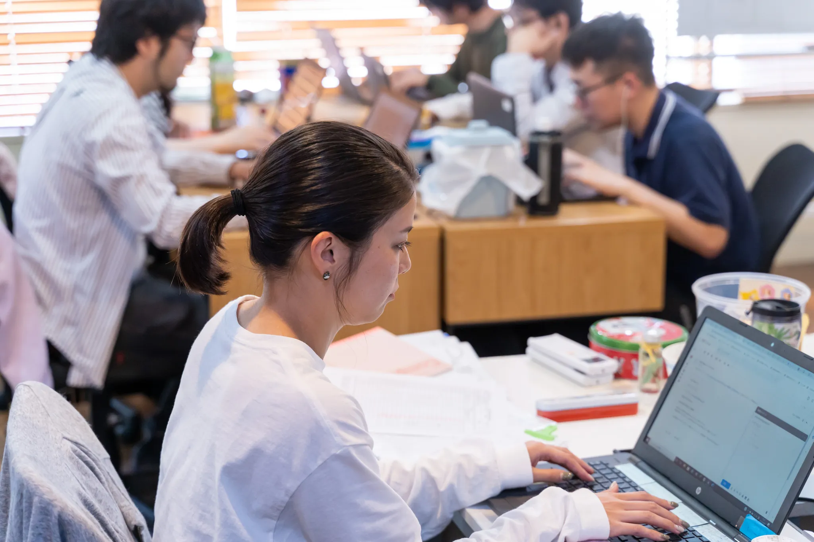

事業内容について

IT WORK
仙台駅から5分、落ち着いて働ける作業所。
リンクワークス仙台駅前は、仙台西口に構えた就労継続支援A型の施設です。静かな環境のなかで、パソコンを使ったIT作業に取り組めます。
OVERVIEW
未経験でも、大丈夫。
未経験でも、大丈夫。
スキルが、武器になる。
あなたのペースで、進める。
リンクワークス仙台駅前のIT作業は、パソコンが初めての方でも基礎からていねいにお教えします。自分のペースで少しずつスキルを積み上げていける環境です。

作業風景

業務内容
ご自身の興味や習熟度に合わせて、担当業務を選べます。
ホームページ制作
HTMLやCSSを使ったウェブサイト制作をサポート。コーディング補助やバナー作成など幅広い工程を担当できます。
- HTML / CSS コーディング
- バナー・画像作成
- テキスト入力・更新
WordPress運用
記事作成・更新・管理補助を行います。操作を学びながら実務で活かせるスキルが身につきます。
- 記事の作成・更新
- 画像アップロード・整理
- プラグイン設定補助
AI活用サポート
ChatGPTなどのAIツールを活用した文章作成・要約・データ整理をサポートします。
- AI文章作成・校正補助
- データ整理・要約
- SNS投稿文の作成補助
DAILY FLOW
1日の流れ
研修があるから、初めての方でも安心してスタートできます。
- 09:30 – 10:40 朝礼・作業開始
- 10:40 – 10:50 休憩
- 10:50 – 12:00 作業
- 12:00 – 12:45 お昼休み
- 12:45 – 13:40 作業
- 13:40 – 13:45 休憩
- 13:45 – 14:40 作業・清掃・終礼